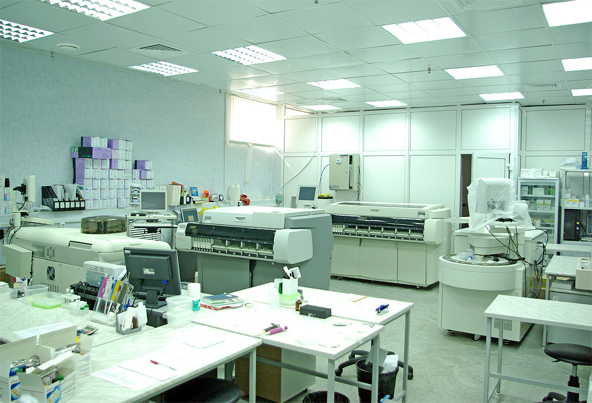
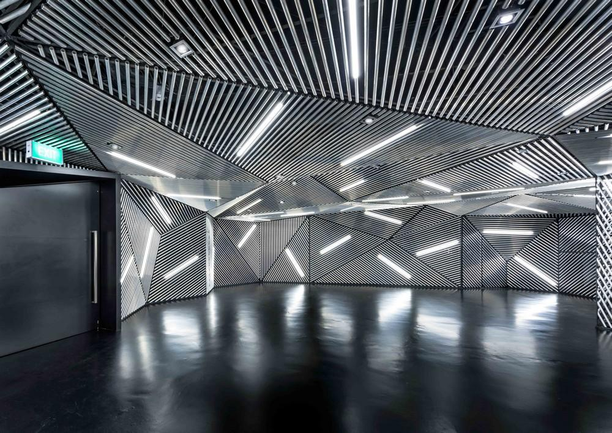
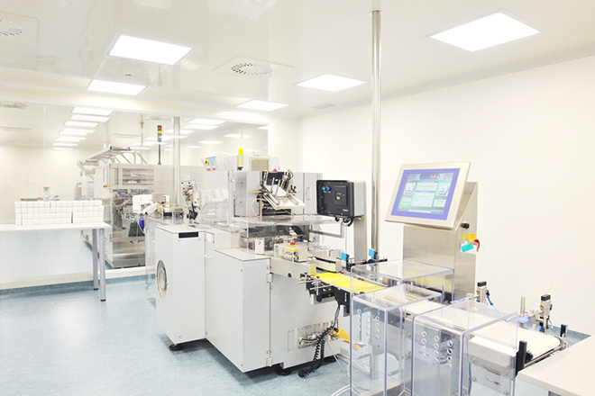

Криохранилище
-
Криобанк рассчитан на 50 000 образцов, которые будут храниться в парах жидкого азота при температуре –180°C.
-
Биологический материал хранится не в самом жидком азоте, а в его парах. Это необходимо для того, чтобы исключить процесс перекрестной контаминации — загрязнения образцов биологического материала частицами друг друга.
-
Всего в России существует два криобанка биотехнологического материала: в ИФР РАН и теперь в МГУ. Новый криобанк создали при поддержке РНФ в рамках направления "Растения" проекта "Ноев Ковчег". В мире подобных хранилищ единицы. Знаменитое международное криохранилище на Шпицбергене предназначено лишь для семян, хранить в нём культуры клеток и меристемы невозможно.
Руководитель подразделения:
Макаревич П.И.
Контакты:
☎ +79996668814
✉ cryo@mc.msu.ru
- 
- 
- 